class: center, middle # Informal Domain Specific Languages <br> with Perl 6 ## Brian Duggan <span class='github'> <small><span class='github'><img src='./github.svg'>bduggan</span> <br>bduggan@matatu.org </span> <a href="http://promptworks.com"><img src="promptworks-logo.png"></a> --- class: center, middle background-image: url(gears-background.png) <h2>We craft software for companies that care about the details.</h2> <a href="http://promptworks.com"><img src="promptworks-logo.png"></a> --- layout: true <div class='header'> <header>Informal Domain Specific Languages</header> </div> <div class="footer"> .active[Intro] .notyet[▶] .notyet[Internal] .notyet[▶] .notyet[External] .notyet[▶] .notyet[Variant] </div> --- class:bullets ## Introduction * not talking about HTML, SQL, CSS * but about languages that generate things like HTML, SQL, CSS * informal: "unofficial", "casual", expressive, colloquial * lack rigorous specifications * practical --- class: bullets ## Examples * HTML Generation (templates, wikis) * Template Toolkit, Jinja2, Slim * Markdown, Wikitext (Wikipedia) * SQL Generation * DBIx::Class, Rose::DB, SQLAlchemy, Arel * Web Microframeworks * Mojolicious, Dancer, Plack, Sinatra --- class: bullets ## Categories * *Internal*: subset of a general language <sup>1</sup><br> web frameworks, ORMs * *External*: parsed <sup>1</sup><br> templating, wikis * *Variant*: modification<br> "Slangs" .footnote[ <small><sup>1</sup>_DSLs_, Fowler, 2010</small> ] ??? We have three broad classifications, but as we'll see in Perl 6, the distinction can be murky. Internal may look like variants. Variants are handled in a similar manner to external DSLs. --- class: bullets ## Techniques * *Internal*: subset of a general language .pull-right[Custom operators] <br> web frameworks, ORMs * *External*: parsed .pull-right[Grammars] <br> templating, wikis * *Variant*: modification .pull-right[Slangs] <br> "Slangs" ??? For the rest of this talk, we'll look at few general techniques from each category and apply them to a few specific examples. --- layout: true <div class="footer"> .notyet[Intro] .notyet[▶] .active[Internal] .notyet[▶] .notyet[External] .notyet[▶] .notyet[Variant] </div> --- class: center, middle # Internal IDSLs # Custom Operators --- layout: true <div class="header"> <header>Perl 6 Custom Operators</header> </div> <div class="footer"> .notyet[Intro] .notyet[▶] .active[Internal] .notyet[▶] .notyet[External] .notyet[▶] .notyet[Variant] </div> --- class:bullets ## operator types * infix: A + B * prefix: -A * postfix: A++ * circumfix: [A] * post-circumfix: A[B] -- * Unary operators take 1 argument * Binary operators take 2 arguments -- * Infix operators also have a noun form, `&[+]` ```code say &[+](1,2) ``` -- * Subs that take two args can be used as infix binary operators ```code sub plus-twice($a,$b) { $a + 2 * $b } say 1 [&plus-twice] 2 ``` --- ## Custom operators Custom operators are declared like this: ```code sub infix:<plus>($x,$y) { $x + $y } say 1 plus 2; ``` -- ```output 3 ``` -- ```code sub prefix:<@@>($x) { $x * 2 } sub postfix:<+++>($y is rw) { $y+=3 } my $z = @@10; $z+++; say $z; ``` -- ```output 23 ``` --- ### Custom operators * All of unicode is fair game 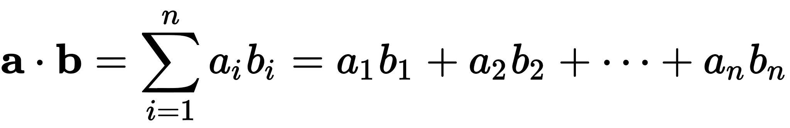 ```code # dot product sub infix:<∙>(@a,@b) { return [+] @a Z* @b } say (1,2) ∙ (3,4) ``` -- ```output 11 ``` --- ### Custom operators * All of unicode is fair game ```code sub circumfix:<⌊ ⌋>($x) { $x.floor } say ⌊2.4⌋ ``` -- ```output 2 ``` --- ## Combining operators ```code sub infix:<plus>($x,$y) { $x + $y } sub infix:<times>($x,$y) { $x * $y } say 1 plus 2 times 3; ``` -- ```output 9 ``` ??? But multiplication has higher precedence than addition. We want this to be 7. --- ## Precedence `is tighter` controls precedence ```code sub infix:<plus>($x,$y) { $x + $y } sub infix:<times>($x,$y) is tighter(&infix:<plus>) { $x * $y } say 1 plus 2 times 3; ``` -- ```output 7 ``` Also `is looser`, `is equiv` --- ## Chaining operators ```code sub infix:<to-the-power>($x,$y) { $x ** $y } say 2 to-the-power 3 to-the-power 2 ``` -- ```output 64 ``` -- <font size='+10'> 2<sup>3<sup>2</sup></sup> </font> treated as <font size='+10'> (2<sup>3</sup>)<sup>2</sup> </font> but should be <font size='+10'> 2<sup>(3<sup><sup>2</sup></sup>)</sup> </font> --- ## associativity We can fix this. `is assoc`! ```code sub infix:<to-the-power>($x,$y) is assoc<right> { $x ** $y } say 2 to-the-power 3 to-the-power 2 ``` -- ```output 512 ``` -- Associativity types:<br> `right` <br> `left` <br> `non` <br> `chain` (`1 < 2 < 3`) <br> `list` (`1,2 X 3,4 X 5,6`) --- ## argument types define subtraction between strings ```code sub infix:<->($x,$y) { $x.subst($y, "", :g); } say "house" - "u"; ``` -- ```output "hose" ``` -- But ```code say 32 - 2 ``` -- ```output 3 ``` -- Argh! --- ## multiple dispatch We can fix this, too. ```code multi infix:<->(Str $x, Str $y) { $x.subst($y, "", :g); } say "house" - "u"; say 32 - 3; ``` -- ```output hose 29 ``` --- ## multiple dispatch Also works for strings, ints, constants, or any class. ```code multi sub infix:<->(Str $x, Str $y) { $x.subst($y, "", :g); } multi sub infix:<->(Str $x, Int $y) { $x.substr(0,$x.chars-$y) } multi sub infix:<->("escalator","electricity") { "stairs" } say "catamaran" - "a"; say "catamaran" - 6; say "escalator" - "electricity"; say 10 - 5; ``` -- ```output ctmrn cat stairs 5 ``` --- ## example emulate python % operator ```code multi sub infix:<%>(Str $f, Numeric $n) { return sprintf($f,$n) } multi sub infix:<%>(Str $f,List $l) { return sprintf($f,$l.flat) } say 'This is %d.' % 40; say 'Pi is about %0.2f and e is about %0.2f' % ( π, e ); ``` ??? Custom operators are an "internal" language, but may look like a variant -- ```output This is 40. Pi is about 3.14 and e is about 2.72 ``` --- <h2>example: generating SQL</h2> * DBIx::Class, Rose::DB::Object, SQL::Abtract * SQLAlchemy, Squeel * Typical techniques: * method chaining * operator overloading * data structure abuse -- Perl 6 operators add new techniques: .normal[ ```SQL SELECT id FROM user INNER JOIN address ON address.user=user.id WHERE name = 'ed' and fullname='Ed Jones' ``` ```code (User + Address)[ name == 'ed' and fullname == 'Ed Jones' ] ``` ] * native operators `and`, `==` can be defined for columns * post-circumfix [ ] can be used to filter --- <h2>example: generating SQL</h2> .normal[ ```code (User + Address)[ name == 'ed' and fullname == 'Ed Jones' ] ``` ] ```code class Table { ... } multi sub infix:<+>(Table $a, Table $b) { ... } ``` --- <h2>example: generating SQL</h2> .normal[ ```code (User + Address)[ name == 'ed' and fullname == 'Ed Jones' ] ``` ] ```code class Filter { ... } class Column { ... } multi sub infix:<==>(Column $a, $b) { ... return Filter.new( ... ) } multi sub infix:<and>(Filter $a, Filter $b) { ... return Filter.new( ... ) } ``` ??? Though as far as operators and SQL go, there is already a precedent. The mathematical foundation of SQL is relational algebra. --- ## example: generating SQL ### Relational algebra * Created by E.F. Codd in 70s * Mathematical foundation of SQL * Defines operators such as: * Projection (π) * Selection (σ) * Rename (ρ) * Natural join (⋈) * Semijoin (⋉)(⋊) * Antijoin (▷) * Division (÷) * Left outer join (⟕) * Right outer join (⟖) --- ## example: an ORM **Relational algebra** ```code sub infix:<⋈>($a, $b) { "$a NATURAL JOIN $b" } say "users" ⋈ "addresses" ``` ```output users NATURAL JOIN addresses ``` ```code sub prefix:<∏>(@x) { "SELECT " ~ @x.join(', ') } say ∏<name age>; ``` ```output SELECT name, age ``` Conclusion: Custom operators are useful building blocks for internal informal DSLs. --- layout: true <div class="footer"> .notyet[Intro] .notyet[▶] .notyet[Internal] .notyet[▶] .active[External] .notyet[▶] .notyet[Variant] </div> --- class: center, middle # External IDSLs ## Grammars ??? half way: 20 minutes --- layout: true <div class="header"> <header>Grammars</header> </div> <div class="footer"> .notyet[Intro] .notyet[▶] .notyet[Internal] .notyet[▶] .active[External] .notyet[▶] .notyet[Variant] </div> --- class: bullets ## HTML Generation * Templating * Template Toolkit, Jinja2, Slim * about 100 listed on wikipedia * Wikis * Markdown, MediaWiki * 15 "lightweight markup language" listed wikipedia Let's look at how to use grammars to parse one of them. --- ## Slim<br>http://slim-lang.com Looks like this: ```slim html head title Slim Examples body h1 Markup examples ``` generates ```html <html> <head> <title>Slim Examples</title> </head> <body> <h1>Markup examples</h1> </body> </html> ``` --- class: bullets ### Parsing Slim 1. Parse 2. Build a DOM --- ### Parsing Slim * A grammar is a collection of regexes (like a class + methods) * A token is a regex with no backtracking * A rule is a regex with significant whitespace ```code grammar slim { rule TOP { <line>+ %% <eol>} token line { <indentation> <tag> [ ' ' <text> ]? } token indentation { <indent>* } token indent { ' ' } token tag { \w+ } token text { \V+ } token eol { \n+ } } say slim.parse(q:to/DONE/); html head title Slim Examples body h1 Markup Examples DONE ``` * `X %% Y` means `[ X ][ Y X ]*` --- <h3>Parsing Slim</h3> .right[ ```code html head title Slim Examples body h1 Markup examples ``` ```code grammar slim { rule TOP { <line>+ %% <eol> } token line { <indentation> <tag> [ ' ' <text> ]? } token indentation { <indent>* } token indent { ' ' } token tag { \w+ } token text { \V+ } } ``` ] .left[ ```output line => ｢html tag => ｢html｣ indentation => ｢｣ line => ｢ head｣ tag => ｢head｣ indentation => ｢ ｣ indent => ｢ ｣ line => ｢ title Slim Examples｣ tag => ｢title｣ text => ｢Slim Examples｣ indentation => ｢ ｣ indent => ｢ ｣ indent => ｢ ｣ ... ``` A grammar generates a match object. ] --- ## Generating a DOM * A grammar can be associated with an object, to perform "actions". * Methods on the object have the same names as the regexes in the grammar. * When a regex is reached, the method is called. -- * Let's make a class called "DOM" and make an instance. .clearfix[ .right[ ```code grammar slim { token tag { ... } token text { ... } token indentation { ... } ... } ``` ] .left[ ```code class DOM { method tag { ... } method text { ... } method indentation { ... } } my $dom = DOM.new; slim.parse($text, actions => $dom); ``` ] ] <br> --- ## Generating a DOM #### Algorithm: 0. Make a **Node** class which has a parent node + child nodes.<br> The nodes will be the DOM tree. Also we will need a stack. 1. When you see a **tag**, **push** a new node onto the stack. 2. When you see **text**, set the text of the top node. 3. When you see **indentation**, **pop** until the stack size is the level of indentation. 4. Connect parent + child nodes when moving from the stack to the tree. Tag: push.<br> Indentation: maybe pop.<br> --- .left[ # stack <img src='img/stack-0-0.png'> # tree <img src='img/tree-0-0.png'> ] .right[ ```code *0 html 1 head 2 title Slim Examples 1 body 2 h1 Markup examples 0 ``` ] .bottom[ indent 0, stack 0: push ] --- .left[ # stack 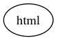 # tree ] .right[ ```code *0 html 1 head 2 title Slim Examples 1 body 2 h1 Markup examples 0 ``` ] .bottom[ indent 0, stack 0: push ] --- .left[ # stack <img src='img/stack-1-0.png'> # tree <img src='img/tree-1-0.png'> ] .right[ ```code 0 html *1 head 2 title Slim Examples 1 body 2 h1 Markup examples 0 ``` ] .bottom[ indent 1, stack 1: push ] --- .left[ # stack <img src='img/stack-1-1.png'> # tree <img src='img/tree-1-1.png'> ] .right[ ```code 0 html *1 head 2 title Slim Examples 1 body 2 h1 Markup examples 0 ``` ] .bottom[ indent 1, stack 1: push ] --- .left[ # stack 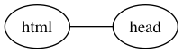 # tree <img src='img/tree-2-0.png'> ] .right[ ```code 0 html 1 head *2 title Slim Examples 1 body 2 h1 Markup examples 0 ``` ] .bottom[ indent 2, stack 2: push ] --- .left[ # stack 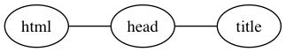 # tree <img src='img/tree-2-1.png'> ] .right[ ```code 0 html 1 head *2 title Slim Examples 1 body 2 h1 Markup examples 0 ``` ] .bottom[ indent 2, stack 2: push ] --- .left[ # stack # tree <img src='img/tree-3-0.png'> ] .right[ ```code 0 html 1 head 2 title Slim Examples *1 body 2 h1 Markup examples 0 ``` ] .bottom[ indent 1, stack 3: pop 3-1=2 then push ] --- .left[ # stack <img src='img/stack-3-1.png'> # tree 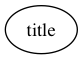 ] .right[ ```code 0 html 1 head 2 title Slim Examples *1 body 2 h1 Markup examples 0 ``` ] .bottom[ indent 1, stack 3: pop 3-1=2 then push ] --- .left[ # stack <img src='img/stack-3-2.png'> # tree 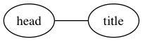 ] .right[ ```code 0 html 1 head 2 title Slim Examples *1 body 2 h1 Markup examples 0 ``` ] .bottom[ indent 1, stack 3: pop 3-1=2 then push ] --- .left[ # stack <img src='img/stack-3-3.png'> # tree <img src='img/tree-3-3.png'> ] .right[ ```code 0 html 1 head 2 title Slim Examples *1 body 2 h1 Markup examples 0 ``` ] .bottom[ indent 1, stack 3: pop 3-1=2 then push ] --- .left[ # stack <img src='img/stack-3-4.png'> # tree <img src='img/tree-3-4.png'> ] .right[ ```code 0 html 1 head 2 title Slim Examples *1 body 2 h1 Markup examples 0 ``` ] .bottom[ indent 1, stack 3: pop 3-1=2 then push ] --- .left[ # stack 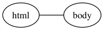 # tree 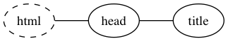 ] .right[ ```code 0 html 1 head 2 title Slim Examples 1 body *2 h1 Markup examples 0 ``` ] .bottom[ indent 2, stack 2: push ] --- .left[ # stack 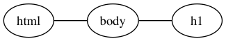 # tree <img src='img/tree-4-1.png'> ] .right[ ```code 0 html 1 head 2 title Slim Examples 1 body *2 h1 Markup examples 0 ``` ] .bottom[ indent 2, stack 2: push ] --- .left[ # stack # tree ] .right[ ```code 0 html 1 head 2 title Slim Examples 1 body 2 h1 Markup examples *0 ``` ] .bottom[ indent: 0, stack 3: pop 3-0-3 ] --- .left[ # stack # tree 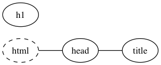 ] .right[ ```code 0 html 1 head 2 title Slim Examples 1 body 2 h1 Markup examples *0 ``` ] .bottom[ indent: 0, stack 3: pop 3-0-3 ] --- .left[ # stack # tree 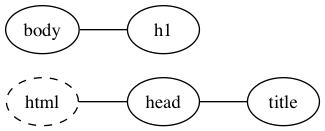 ] .right[ ```code 0 html 1 head 2 title Slim Examples 1 body 2 h1 Markup examples *0 ``` ] .bottom[ indent: 0, stack 3: pop 3-0-3 ] --- .left[ # stack <img src='img/stack-5-3.png'> # tree 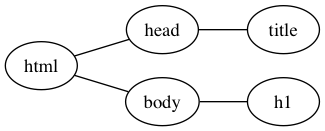 ] .right[ ```code 0 html 1 head 2 title Slim Examples 1 body 2 h1 Markup examples *0 ``` ] .bottom[ indent: 0, stack 3: pop 3-0-3 ] --- ## The Code 0. Make a **Node** class which has a parent node + child nodes.<br> The nodes will be the DOM tree. Also we will need a stack. ```code class Node { has Str $.tag; has Str $.text is rw; has Node $.parent is rw; has Node @.children; } class DOM { my Node @stack; has Node $.tree; method tag { ... } method text { ... } method indentation { ... } } grammar slim { ... token tag { ... } token text { ... } token indentation { ... } } ``` --- ## The Code 1\. When you see a **tag**, **push** a new node onto the stack. ```code method tag($/) { @stack.push: Node.new: tag => ~$/; } ``` 2\. When you see **text**, set the text of the top node. ```code method text($/) { @stack[*-1].text = ~$/; } ``` `$/` is the match object for the token<br> `~` stringifies<br> --- ## The Code 3\. When you see **indentation**, **pop** until the stack size is the level of indentation.<br> 4\. Connect parent + child nodes when moving from the stack to the tree. ```code method indentation($/) { while @stack > @$<indent> { my $node = @stack.pop; with @stack[*-1] -> $top { $node.parent = $top; $top.children.push: $node; } } } ``` `$/` is the match object for the `indentation` token<br> `with` checks for definedness --- ## The Code To print, dump a node, and recursively dump children at one more level of indentation. ```code class Node { ... method dump(:$level=0) { say "<$.tag>".indent($level); say .indent($level) with $.text; .dump(level => $level+1) for self.children; say "</$.tag>".indent($level); } } ``` `.indent` on a string prepends spaces<br> A leading `.` calls a method on `$_` --- <h3>The Code</h3> .small[ .left[ ```code grammar slim { rule TOP { <line>+ %% <eol>} token line { <indentation> <tag> [ ' ' <text> ]? } token indentation { <indent>* } token indent { ' ' } token tag { \w+ } token text { \V+ } token eol { \n+ } } class Node { has Str $.tag; has Str $.text is rw; has Node $.parent is rw; has Node @.children; method dump(:$level=0) { say "<$.tag>".indent($level); say $.text.indent($level) with $.text; .dump(level => $level+1) for self.children; say "</$.tag>".indent($level); } } ``` ] .right[ ```code class DOM { my Node @stack; has Node $.top; method tag($/) { @stack.push: Node.new: tag => ~$/; $!top //= @stack[0]; } method text($/) { @stack[*-1].text = ~$/; } method indentation($/) { while @stack > @$<indent> { my $node = @stack.pop; with @stack[*-1] -> $top { $node.parent = $top; $top.children.push: $node; } } } } my $dom = DOM.new; my $match = slim.parse(q:to/DONE/,actions => $dom) or die 'no parse'; html head title Slim Examples body h1 Markup Examples DONE $dom.top.dump; ``` ] ] --- ## Output: ```output <html> <head> <title> Slim Examples </title> </head> <body> <h1> Markup Examples </h1> </body> </html> ``` Conclusion: Grammars are useful for parsing external informal DSLs. --- layout: true <div class="footer"> .notyet[Intro] .notyet[▶] .notyet[Internal] .notyet[▶] .notyet[External] .notyet[▶] .active[Variant] </div> --- class: center, middle # Variant IDSLs ## Slangs --- layout: true <div class="header"> <header>Slangs</header> </div> <div class="footer"> .notyet[Intro] .notyet[▶] .notyet[Internal] .notyet[▶] .notyet[External] .notyet[▶] .active[Variant] </div> --- class: bullets # Variants * Modifying a language to create a new language * Perl 5 source filters: bad, messy * Perl 6 slangs provide a structured way to do this --- class: bullets # Slangs * Rakudo uses NQP (Not Quite Perl) to build Perl 6 * NQP defines `Perl6::Grammar` and `Perl6::Actions` * *slang* is short for sublanguage <sup>1</sup> * i.e. a language derived from `Perl6::Grammar` * (or derived from another grammar in the Perl 6 *language braid*) * slangs are "A principled way to create DSLs" <sup>1</sup> <sup>1</sup> design.perl6.org --- class: bullets # Slangs * Still WIP * What works now: * Modifying grammars (at compile time) * Updating the language braid * Lexically scoped slangs --- class: bullets ## The language braid * During compilation, the `%*LANG` variable, has grammars and actions. * Interwoven and combined, they form Perl 6. ```code BEGIN { for sort keys %*LANG -> $k { say "$k is { %*LANG{$k}.^name }" } } ``` ```output MAIN is Perl6::Grammar MAIN-actions is Perl6::Actions P5Regex is Perl6::P5RegexGrammar P5Regex-actions is Perl6::P5RegexActions Quote is Perl6::QGrammar Quote-actions is Perl6::QActions Regex is Perl6::RegexGrammar Regex-actions is Perl6::RegexActions ``` --- class: bullets ## The language braid * Immutable versions are stored in $~MAIN, $~Quote, etc * Available even at run time ```code for $~MAIN, $~Quote, $~P5Regex, $~Regex { say .grammar.^name; say .actions.^name; } ``` ```output Perl6::Grammar Perl6::Actions Perl6::P5RegexGrammar Perl6::P5RegexActions Perl6::QGrammar Perl6::QActions Perl6::RegexGrammar Perl6::RegexActions ``` --- ## Perl6::Grammar To see examples, use `--target=parse`: ```code perl6 --target=parse -e "say 'hello, world'" ``` -- ```output - statementlist: say 'hello, world' - statement: 1 matches - EXPR: say 'hello, world' - longname: say - name: say - identifier: say - args: 'hello, world' - arglist: 'hello, world' - EXPR: 'hello, world' - value: 'hello, world' - quote: 'hello, world' - nibble: hello, world ``` --- ## Perl6::Grammar * Output matches definitions in the rakudo source * https://github.com/rakudo/rakudo/blob/nom/src/Perl6/Grammar.nqp ```code grammar Perl6::Grammar { rule statementlist { ... <statement> ... } token statement { ... <EXPR> ... } token longname { ... <name> .. } token name { ... <identifier> ... } token identifier { ... } ... } ``` --- ## Making a slang Let's try to make a slang in which subroutines are declared like: ```code lambda foo() { ... } ``` instead of ```code sub foo() { ... } ``` --- ## Making a slang Original (Perl6/Grammar.nqp) ```code token routine_declarator:sym<sub> { 'sub' <.end_keyword> <routine_def('sub')> } ``` * Let's change 'sub' to 'lambda'. * Deriving from a class and applying a *role* gives us a way to have a new class with a single method replaced. * Deriving from a grammar and applying a *role* gives us a way to have a new grammar with a single token replaced. --- ## Making a slang **but** creates a copy of an object, with a role mixed in. -- ```code BEGIN { %*LANG<MAIN> := $~MAIN.grammar but role { rule routine_declarator:sym<sub> { 'lambda' <.end_keyword> <routine_def('sub')> } } } ``` -- ```code lambda foo { say 'hello, world' } foo(); ``` --- # Lexically scoped slangs If you put your slang in a module: ```code # lambda.pm sub EXPORT { %*LANG<MAIN> := $~MAIN but role { ... } } ``` Using it is lexically scoped: ```code { use lambda; lambda hello { say 'hi' } } ## lambda bye { say 'bye' } # illegal! sub bye { say 'bye' } # ok ``` --- # Examples a few slangs on modules.perl6.org * Slang::SQL -- sql inline in Perl 6 * Slang::Piersing -- allow identifier names ending in ? or ! * Slang::Tuxic -- allow a space betwen sub and parameter list (`sub ($x)`) --- ## future? * Specified but not yet implemented * `augment slang`, `supercede slang` ```code augment slang MAIN { ... } supercede slang Regex { ... } ``` --- layout: true <div class="footer"> .notyet[Intro] .notyet[▶] .notyet[Internal] .notyet[▶] .notyet[External] .notyet[▶] .notyet[Variant] </div> --- class: bullets # Conclusion * Making informal DSLs may involve * creative use of syntax (internal) * parsing (external) * modifying an existing language (variant) * Perl 6 offers new and exciting techniques for each of these. --- class: center,middle # *fin*